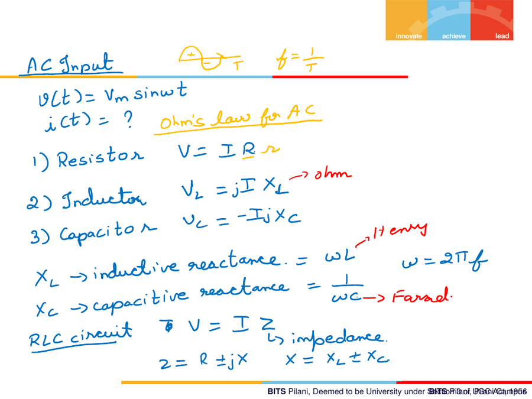
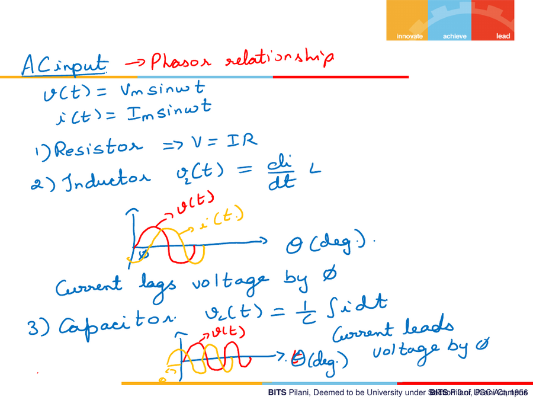
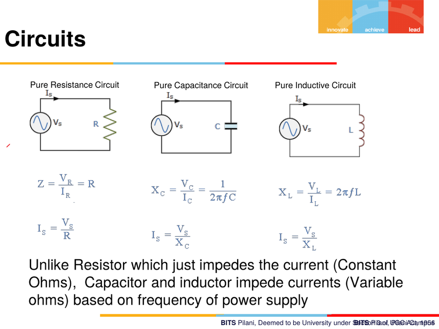

7. AC Circuit Fundamentals — Reactance, Impedance, Phasors
7.1 Ohm's Law for AC, per component
Given v(t) = Vm sin(ωt), what is i(t) for each passive element?
| Element | Time-domain law | AC ("phasor") form | Reactance |
|---|---|---|---|
| Resistor | V = IR |
V = IR |
— (no reactance, real only) |
| Inductor | V_L = L·di/dt |
V_L = jI·X_L |
X_L = ωL |
| Capacitor | i = C·dv/dt |
V_C = −jI·X_C |
X_C = 1/(ωC) |
X_L= inductive reactance (Ω), grows with frequencyX_C= capacitive reactance (Ω), shrinks with frequencyω = 2πf- Units check: L is in Henry, C is in Farad — reactance formulas convert
these into an equivalent Ohms value, which is why you cannot write
Ohm's law directly in terms of L or C without going through
ωLor1/ωC.

7.2 RLC circuit — Impedance
V = I · Z
Z = R ± jX where X = X_L ± X_C
Z is called the impedance — the AC generalisation of resistance,
combining the resistive (real) and reactive (imaginary) parts.
7.3 Phasor relationships — phase between V and I
For v(t) = Vm sin(ωt), i(t) = Im sin(ωt):
- Resistor:
V = IR— voltage and current are in phase (no angle shift). - Inductor:
v(t) = L·di/dt— because of the derivative term, current lags voltage by an angle φ (θ in the diagram). Mnemonic used in class: think of it as the current "catching up" to the voltage. - Capacitor:
v(t) = (1/C)∫i dt— because of the integral term, current leads voltage by an angle φ.

Memory aid: "ELI the ICE man" — for an inductor (L), E (voltage) leads I (current); for a capacitor (C), I leads E.
7.4 Power factor and why utilities care
- Most real-world (consumer) loads are inductive in nature (motors, transformers, etc.), meaning current lags voltage.
- The power factor describes how close this phase angle is to zero (ideal = 1.0, i.e. purely resistive/in-phase).
- A power factor that drifts down from ~1 (e.g. to 0.998 and lower) represents wasted power from the utility's perspective.
- Fix: utilities/engineers add capacitors in parallel at the load end. Since an inductor "lags" and a capacitor "leads" — in exactly opposite senses — the capacitor's leading reactive component cancels (neutralises) the inductor's lagging reactive component. The real (working) load itself is unaffected; only the reactive mismatch is corrected.
- Inductor = lagging element. Capacitor = leading element.
7.5 Pure R, Pure C, Pure L circuits — quick comparison
| Pure Resistance | Pure Capacitance | Pure Inductance | |
|---|---|---|---|
| Impedance | Z = V_R/I_R = R |
X_C = V_C/I_C = 1/(2Ï€fC) |
X_L = V_L/I_L = 2Ï€fL |
| Current | I_S = V_S/R |
I_S = V_S/X_C |
I_S = V_S/X_L |
| Behaviour vs frequency | Constant (frequency-independent) | Impedance drops as frequency rises | Impedance rises as frequency rises |
Unlike a resistor, which impedes current with a constant Ohmic value regardless of frequency, capacitors and inductors impede current with a variable ("AC") Ohms value that depends on the frequency of the power supply.

7.6 Series RLC — filter behaviour (qualitative, from class)
- In an RLC series circuit driven by AC,
v(t) = Vm sin(ωt). - As the circuit is switched on,
LandCboth begin "charging" — energy is continuously exchanged between L and C as the circuit oscillates, whileRdissipates energy as heat. - This L–C energy exchange, and the frequency-dependent nature of
X_LandX_C, is the basis of filter design (covered later in the course, under signal conditioning — RC and RL filter design specifically promised for a later class). - General relation to keep in mind:
X_L < X_Cat low frequency andX_L ≫ X_Cat high frequency (they cross over at the resonant frequency, whereX_L = X_C).